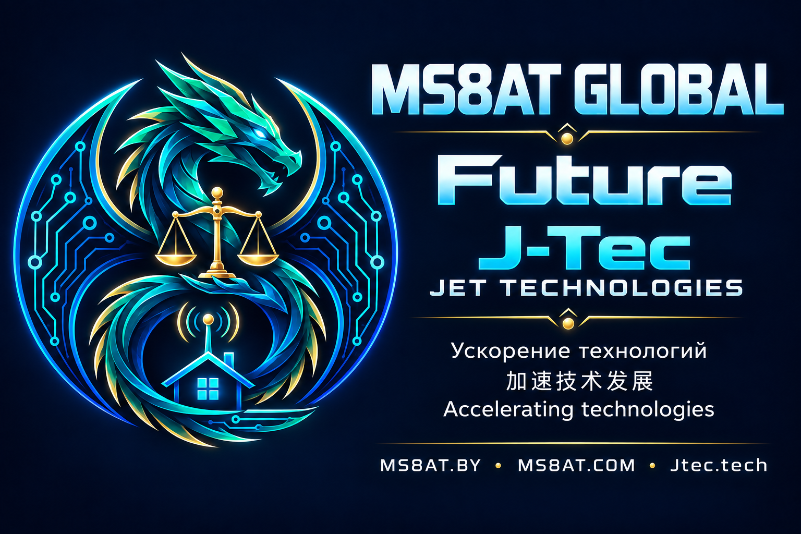
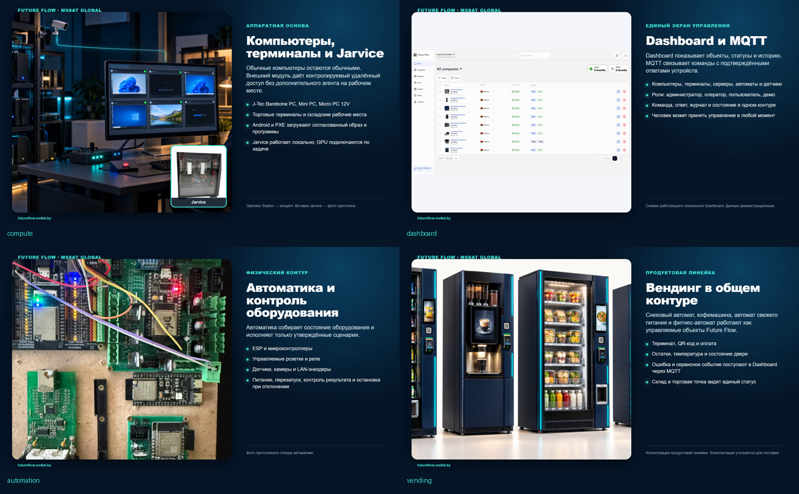
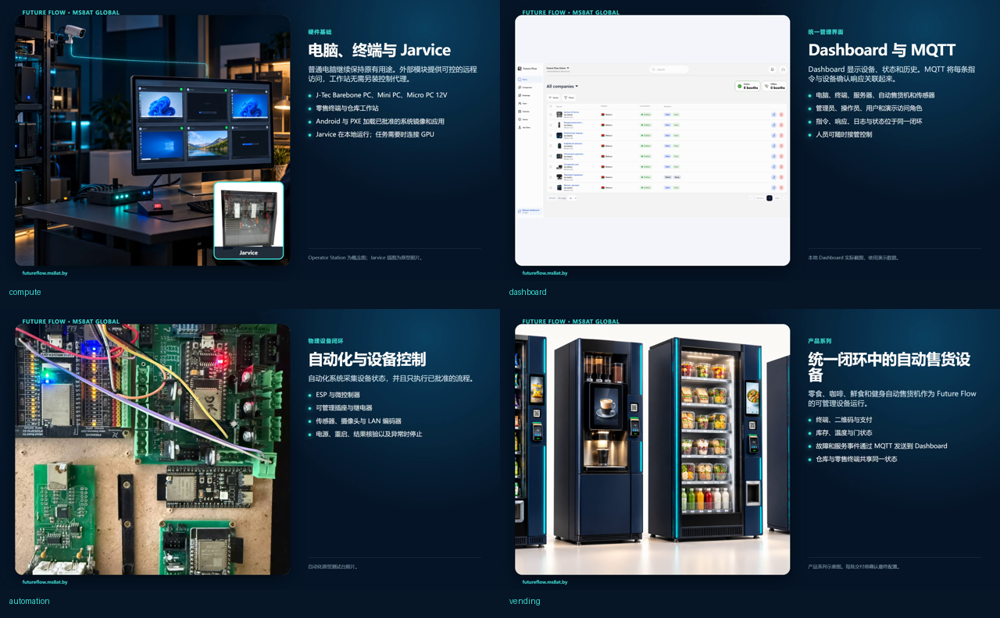
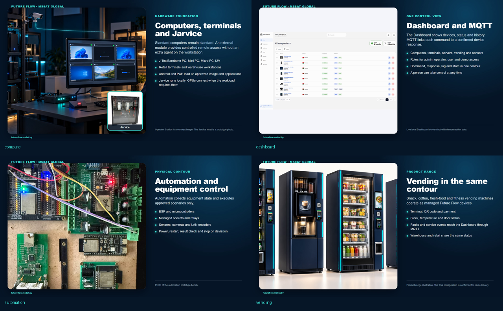

Оборудование
Future PC · Jarvice · Android/PXE · MikroTik
MS8AT GLOBAL · FUTURE · J-TEC
Компьютеры, серверы, торговые терминалы, автоматика и вендинг работают через единый Dashboard и MQTT. Локальный ИИ следует утверждённому сценарию, а человек сохраняет контроль.
Посмотреть за 2 минутыComputers, servers, retail terminals, automation and vending work through one Dashboard and MQTT. Local AI follows approved procedures while people remain in control.
Watch in two minutes
ЕДИНЫЙ КОНТУР
От компьютера и сервера до розетки, датчика и вендингового автомата. MQTT передаёт телеметрию и только разрешённые команды; оператор может принять управление в любой момент.
统一系统
从计算机、服务器到插座、传感器和无人售货设备。MQTT 传输遥测和获准指令，操作员可随时接管。
ONE SYSTEM
From computers and servers to sockets, sensors and vending machines. MQTT carries telemetry and approved commands; the operator can take control at any time.
Future PC · Jarvice · Android/PXE · MikroTik
ESP · реле · розетки · камеры · датчики
Dashboard · MQTT · роли · журнал
Heart · Memory · Task Manager · проверка



ГОТОВЫЕ ВИДЕО
Два темпа подачи на каждом языке. В кадре компьютеры, Jarvice, Dashboard/MQTT, автоматика и вендинг.
成品视频
每种语言提供两种节奏，覆盖计算机、Jarvice、Dashboard/MQTT、自动化和无人售货设备。
FINISHED VIDEOS
Two pacing options in every language, covering computers, Jarvice, Dashboard/MQTT, automation and vending.
DOCUMENTS
СЛЕДУЮЩИЙ ЭТАП
Сначала проверяем каталог, документы и трёхъязычную подачу. Затем подключаем формы, тестовую оплату и домены.
下一阶段
先验证目录、文档和三语内容，再连接表单、测试支付和域名。
NEXT STAGE
First validate the catalogue, documents and trilingual content. Then connect forms, test payments and domains.
J-Tec / Jet Technologies: продукты, партнёры, реселлеры и технические материалы.
Проект запуска → PROJECT 02Интернет-магазин Future: компьютеры, терминалы, автоматика, вендинг и поддержка.
Проект запуска →Статус: проекты запуска. Платёжные маршруты, банковское финансирование, сертификация и сроки поставки подтверждаются отдельно. · 状态：上线项目。支付、融资、认证与交付时间需另行确认。 · Status: launch projects. Payments, financing, certification and delivery dates require separate confirmation.